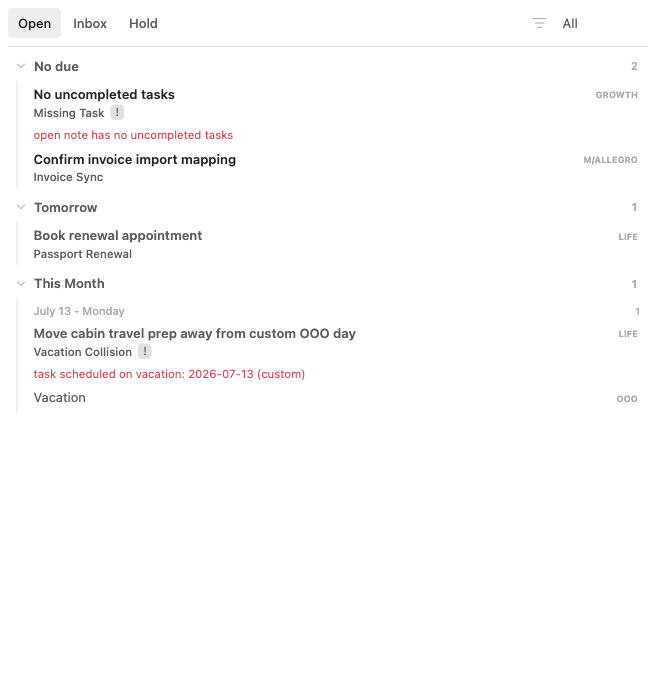
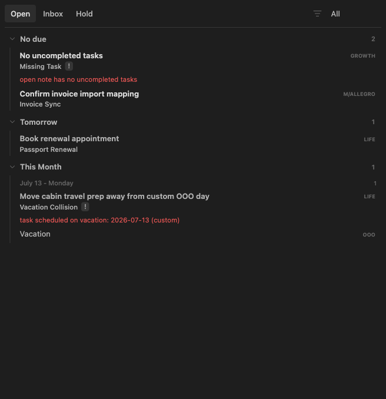

Feature
Open view
Open is the active-work board for status: open notes, grouped by due-date buckets and ordered by next action.
Rationale
Why it exists.
Why Open Exists
Open is the daily command surface. It should show what can be acted on now, organized by due date, without mixing in backlog notes or completed work.
The view keeps scheduling in Tasks due markers. Moving work forward or backward therefore remains visible in the Markdown source and compatible with Obsidian Tasks.
Executable documentation
Acceptance criteria.
- Notes with missing, blank, or explicit
status: openappear in Open. - Hold notes do not appear in Open.
- Rows use the earliest unfinished due task as the next action.
- Rows are grouped into No due, Today, Tomorrow, This Month, Next Month, and Future buckets.
Screenshots
Generated by WDIO.



Fixtures
Shared vault examples.
acceptance/fixtures/base/Db/Mission/Allegro/Invoice Sync.mdacceptance/fixtures/base/Db/Life/Passport Renewal.md